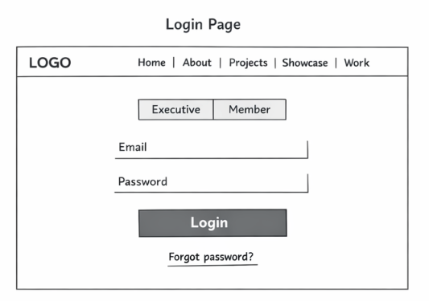
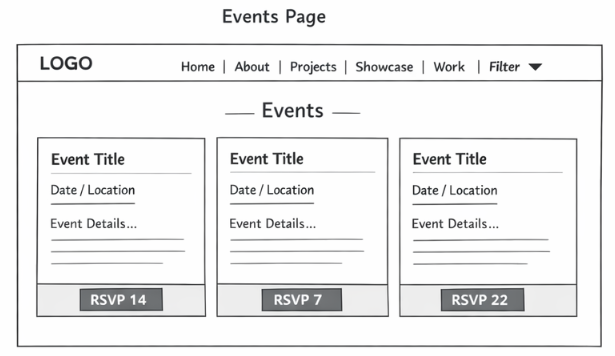
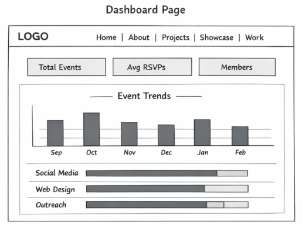

Development Plan Revised - Final Delivery
Revisions are marked with an Revised amber badge. New sections are marked with a New green badge. Original text that was removed is shown with a strikethrough.
1. Names
Team Name: Built by Four
Team Members: Saharsh Sukumar, Micai Fordem, Sumer Aulaks, Angad Johal
Client: McMaster Computer Science Society (CSS)
App Name: CSS Event & Productivity Dashboard
2. Purpose
The CSS Event & Productivity Dashboard is a web app we built for the McMaster Computer Science Society. The society had two main problems they were dealing with - event management was all over the place, and there was no real way to track what each team was doing.
Everything was being coordinated through group chats. Members had to scroll way back through old messages just to find out when an event was, where it was, or how many people were coming. There was also no record of past work at all - if you wanted to know what happened at an event or who contributed to it, there was nothing to look at. They had biweekly check-in meetings but that only helped so much.
Our app solves both of those. Executives get a central place to create, edit, and delete events. All members get a clean events page where they can browse upcoming events and RSVP with one click. The RSVP counter updates live without needing to refresh. On the exec side, there is a dashboard showing total events, average RSVPs, monthly event trends on a bar chart, and a breakdown of how much each sub-team contributed to events.
Access is role-based. Executives see everything including the dashboard and event management tools. Regular members just see the events page and the calendar. This keeps things simple and makes sure people only see what they need to.
3. Data Description
Users
Stores login info and each person's role so the app knows what to show them. This table gets checked every time someone logs in.
- user_id - INT, PRIMARY KEY, AUTO_INCREMENT
- name - VARCHAR
- email - VARCHAR
- password - VARCHAR (bcrypt hash)
- role - ENUM ('executive' / 'member')
- created_at - DATETIME
Members can now register themselves through register.php. We also added a created_at column to track when accounts were made. The role field uses ENUM so invalid values can't be entered - anyone who signs up through the form always gets assigned member. Executives are still added directly through setup.sql.
Reason: The client wanted members to be able to join on their own without an exec having to manually add them each time.
Events
Stores all event info created by executives. Every card on the events page comes from this table. Execs can add, edit, and delete rows. Members can only read from it.
- event_id - INT, PRIMARY KEY, AUTO_INCREMENT
- title - VARCHAR
- description - TEXT
- date - DATE
- time - TIME
- location - VARCHAR
- capacity - INT
- category - ENUM ('academic','networking','social','workshop','competition')
- created_by - INT, FOREIGN KEY (references Users)
- created_at - DATETIME
RSVPs
Links users to events they are interested in. Each row is one RSVP. The interest counter on each event card is calculated by counting rows for that event_id. A user can only RSVP once per event.
- rsvp_id - INT, PRIMARY KEY, AUTO_INCREMENT
- user_id - INT, FOREIGN KEY (references Users)
- event_id - INT, FOREIGN KEY (references Events)
- status - ENUM ('interested', 'not_going')
- rsvpd_at - DATETIME
Team_Stats
Stores each sub-team's contribution for a specific event. This is what the productivity section of the dashboard pulls from. Execs log a row after each event and can also edit or delete existing entries if something was entered wrong.
- stat_id - INT, PRIMARY KEY, AUTO_INCREMENT
- event_id - INT, FOREIGN KEY (references Events)
- main_team - ENUM ('communications','studentsupport','events','outreach','webtech')
- sub_team - ENUM ('design','socialmedia','academic','mentorship') - nullable
- contribution - TEXT
- members_involved - INT
- logged_by - INT, FOREIGN KEY (references Users)
- logged_at - DATETIME
The original plan had a single team_name column. During development we changed this to two columns (main_team and an optional sub_team) because the CSS team structure has sub-teams inside some of the main teams. This lets the dashboard show a proper breakdown at both levels. We also added edit and delete so execs can fix mistakes in what they logged.
Reason: The CSS team structure was more complex than we originally planned for. The edit/delete came up during testing when we realized there was no way to fix a wrong entry.
Organization_Info
Holds basic info about CSS like the name, contact email, and social media links. This table only ever has one row.
- org_id - INT, PRIMARY KEY
- name - VARCHAR
- description - TEXT
- email - VARCHAR
- social_links - TEXT (JSON string)
4. Functions Performed by the App
Authentication System
When someone submits the login form, PHP runs a SELECT query on the Users table looking for a matching email and password. If it finds one, it starts a session and stores the user's role in $_SESSION. Every page checks the session when it loads - if there is no session, the user gets sent back to the login page. The role stored in the session controls what each person can see and do on the site.
We added a registration page (register.php). New members fill out their name, McMaster email, and a password. PHP checks that the email ends in @mcmaster.ca, makes sure the account does not already exist, hashes the password using password_hash(), and adds a new row to Users with role = 'member'. After that it sets a flash message in the session and redirects to the login page.
Reason: Before this, a new member could only get an account if an exec manually added them. The client said that was too much extra work.
Event Management
Create event - PHP runs INSERT INTO Events with the form data. Execs only.
View events - PHP runs SELECT * FROM Events sorted by date. All logged-in users can see this.
Edit event - A pre-filled form submits an UPDATE query for that event_id. Execs only.
Delete event - PHP runs DELETE FROM Events for the selected id. Execs only. Because of the CASCADE foreign keys, deleting an event also removes its RSVPs and Team_Stats rows automatically.
We added sorting to the events page. Users can now sort by Date (the default, grouped by month), by Name A-Z (grouped by first letter), or by Time of Day (grouped into Morning, Afternoon, Evening, Night). The sorting happens server-side so it works together with the category filter. We also moved the category filter itself server-side so it does not reset when you change the sort.
Reason: As we added more events during testing, the page got harder to scan through. The client also mentioned that members usually look for events based on what time of day they are free.
RSVP System
Mark interest - PHP runs INSERT INTO RSVPs with the current user_id and event_id.
Remove interest - PHP runs DELETE FROM RSVPs where both user_id and event_id match.
Show live count - SELECT COUNT(*) FROM RSVPs WHERE event_id = [id]. JavaScript updates the button and counter right away without reloading the page.
The RSVP button switches between "RSVP" and "Interested" depending on whether the current user has already clicked it.
Calendar View
We added a lot more to calendar.php. It now has three view modes that switch without reloading the page: a monthly calendar grid, a year view that shows all 12 months at once as small cards, and a list view of upcoming events. In the year view there is a dropdown to jump between years. Clicking on any day in the monthly view opens a modal with the events for that day and RSVP buttons. Execs also get a heatmap showing RSVP activity per day and a link to create a new event on the clicked date.
Reason: The client said they plan things months ahead and wanted to see the full year without clicking through one month at a time.
Dashboard & Analytics
Total events hosted - SELECT COUNT(*) FROM Events.
Average RSVP count - SELECT AVG() on a subquery that counts RSVPs per event.
Event trends - SELECT COUNT(*), MONTH(date) FROM Events GROUP BY MONTH(date). This feeds the bar chart.
Team productivity - SELECT main_team, members_involved FROM Team_Stats, shown as progress bars per sub-team.
We ended up building the bar chart with plain CSS and HTML instead of Chart.js like we originally planned. Chart.js was causing styling issues with our dark theme so we scrapped it. The productivity section now supports both main teams and sub-teams. Execs can also edit and delete contribution entries right from the dashboard using modals - we added edit_contribution.php and delete_contribution.php to handle those.
Reason: Chart.js did not play nicely with our CSS. Edit/delete on contributions came up during testing - we had no way to fix a mistake once something was logged.
5. Roles of Team Members
All four of us contributed equally across the project. Each person led one main area but everyone helped with testing, fixing bugs, and cleaning up the code.
| Member | Primary Area | Deliverables |
|---|---|---|
| Saharsh Sukumar | Dashboard & Analytics | CSS bar chart for event trends, the four stat counter cards at the top, and all the SQL aggregation queries that feed the dashboard. Also helped with testing and debugging across the final increment. |
| Micai Fordem | Event Management | Events page card layout, event creation form, edit and delete functionality, all INSERT/UPDATE/DELETE queries for Events. Also added the three sort modes, moved the category filter server-side, added the My RSVPs badge, and fixed the blank space issue with empty descriptions. |
| Sumer Aulaks | RSVP & Calendar | RSVP toggle with live AJAX counter, INSERT/DELETE RSVP queries. Extended the calendar with Year View, fully JS-driven view switching between Calendar/Year/List, and the day modal with inline RSVP buttons. |
| Angad Johal | Productivity Tracking & Authentication | Team Stats section of the dashboard, progress bars per sub-team, log/edit/delete contribution forms and the handler files. Also built register.php with email validation, bcrypt hashing, and the password strength meter, and updated login.php to link to it. |
6. Wireframes
Login Page
A centered card with email, password, role selector, and a login button. PHP checks the Users table and starts a session if the credentials match.

We added a "New member? Create an account" link below the form that goes to register.php. The page also now shows a flash message when someone gets redirected here after registering.
Registration Page New
Same card style as the login page. Has four fields: Full Name, McMaster Email (@mcmaster.ca only), Password, and Confirm Password. There is a password strength bar under the password field and a match indicator under the confirm field. Both password fields have a show/hide toggle. Submitting creates the account and sends the user to the login page.
Events Page
A grid of event cards each showing the title, date, location, description, and an RSVP button with a live interest count. Category filter dropdown at the top.

Added three sort buttons next to the category filter - Date, A-Z, and Time of Day. Events show up under group labels based on which sort is active. A My RSVPs badge in the top right shows how many events the user has RSVPd to. Events with no description no longer show an empty space.
Calendar Page
A monthly calendar grid where clicking a day opens a modal with that day's events and RSVP buttons.
Added two more view modes on top of the monthly grid - Year View (all 12 months on one screen with a year dropdown) and List View (a scrollable list of upcoming events with RSVP). Switching between views happens instantly with no page reload.
Dashboard Page (Executives Only)
Stat counter cards at the top, a bar chart for monthly event activity, and progress bars showing how much each sub-team contributed. Each logged contribution now has Edit and Delete buttons.

Event Creation Page (Executives Only)
A form with fields for all event details. Submitting runs an INSERT INTO Events query. Only execs can access this page.

7. The Increments
First Increment - Due: End of Week 10/11
Goal: Get the basic foundation working. By the end of this increment a user should be able to log in, have their role picked up, and get sent to the right page.
All members - Set up the database tables and seed data. Built the login page, session handling, and role-based redirect. Each person also put together the basic HTML layout and navigation for their assigned page.
Second Increment - Due: End of Week 12
Goal: Core event features working. Members can browse events and RSVP. Execs can create, edit, and delete events.
Micai - Event cards layout, event creation form, edit and delete.
Sumer - RSVP toggle, INSERT/DELETE logic, live JavaScript counter.
Saharsh & Angad - Dashboard layout and stat cards pulling real data from the database.
Third Increment - Due: End of Week 13
Goal: All the interactive features done. Dashboard fully working with the chart and productivity tracking.
Saharsh - CSS bar chart for monthly event trends using GROUP BY.
Angad - Team productivity section, progress bars, exec log form.
Sumer - Category filter and event calendar with day modal and RSVP.
Micai - Events page polish, responsive fixes, testing.
Final Increment - Due: End of Week 14
Goal: Ship everything from client feedback, test the full app end to end, and clean up the code.
All members worked together equally on the following:
- Built register.php: @mcmaster.ca email validation, bcrypt password hashing, password strength meter, confirm password match check, redirects to login on success.
- Extended calendar.php with Year View (12 mini-month cards, year dropdown, prev/next year buttons) and JS view switching between Calendar, Year, and List using addEventListener and data-view attributes.
- Added server-side sorting to events.php (Date, A-Z, Time of Day) with group labels for each sort. Moved the category filter server-side. Added the My RSVPs badge. Fixed empty description blank spaces.
- Added edit and delete for contribution entries on the dashboard. Each row gets Edit (pre-filled modal) and Delete (confirmation modal) buttons. Added edit_contribution.php and delete_contribution.php to handle the form submissions.
- Documentation pass on every file: header comments, JSDoc on every function, const/let throughout, no inline event handlers anywhere.
Reason: Registration, year view, sorting, and contribution edit/delete all came out of client feedback after Increment 1. See Section 8 for details.
8. Client Feedback - First Increment
After showing the first increment to the McMaster CSS executives, they gave us feedback on what they liked and what they wanted changed. Here is what they told us:
"We want a clean and simple interface - nothing overwhelming. Our members are not all super technical."
"Tracking event interest and knowing how many people are actually coming is really important to us."
"Too many features would make the app confusing and harder to learn. Keep it focused."
"A card layout for events makes a lot of sense - title, date, location all in one place at a glance."
"It would be great if new members could sign up themselves without us having to add them manually every time."
"We plan events months in advance. Being able to see the whole year on one screen would really help us."
"When there are a lot of events it gets hard to find what you're looking for. Some way to sort or organize them would be useful."
Here is what we changed based on that feedback:
- Added member registration. The client said manually adding every new member was too much overhead. We built register.php so members can sign up on their own with an @mcmaster.ca email. Execs are still added through setup.sql.
- Added year view to the calendar. The client said they plan things months ahead and wanted to see the whole year at once. We added a Year View tab that shows all 12 months as small calendar cards with an event count badge on each, plus a dropdown to jump to different years.
- Added event sorting. The client said the list gets hard to search through as it grows. We added three sort options - Date, A-Z, and Time of Day - each with group labels to make scanning easier. Sorting is server-side so it works with the category filter at the same time.
- Cut features we did not need. Our original plan had a comment section on events and a member-facing productivity view. After the client said too many features would make things confusing, we dropped both of those.
- Made RSVP a priority in Increment 2. The client said tracking interest was the most important thing to them. We made sure the live RSVP counter shipped with the event cards in Increment 2 instead of leaving it for later.
- Locked in the card layout for events. The client confirmed they wanted title, date, and location visible right away without clicking anything. We made sure the event cards matched that. We also fixed it so events with no description do not show an empty gap.
- Simplified the dashboard. We had originally planned to track stats per individual member. After the client said to keep it simple, we changed it to team-level and sub-team-level progress bars instead.
9. Final File Structure New
Added for the final delivery to show everything included in the submitted zip file.
css_dashboard/
|
+-- login.php Login page + bcrypt authentication
+-- logout.php Session destroy + redirect
+-- register.php Member self-registration (NEW)
+-- events.php Browse events + RSVP + sort/filter (UPDATED)
+-- calendar.php Month / Year / List views (UPDATED)
+-- event_form.php Create / Edit event form (exec only)
+-- event_delete.php Delete event handler (exec only)
+-- rsvp.php AJAX RSVP toggle endpoint
+-- dashboard.php Executive dashboard (UPDATED)
+-- log_contribution.php Save team contribution (UPDATED)
+-- edit_contribution.php Edit team contribution (NEW)
+-- delete_contribution.php Delete team contribution (NEW)
|
+-- includes/
| +-- auth.php Session helpers, requireLogin(), requireExec()
| +-- db.php PDO connection
| +-- header.php Shared HTML header + navbar
| +-- footer.php Shared HTML footer + toast JS
|
+-- setup.sql Creates all DB tables + seeds demo data
+-- my_style.css Public site styles
+-- app_style.css Dashboard app styles
|
+-- index.html Home page
+-- about.html About Us / Team
+-- project.html Projects index
+-- showcase.html Showcase page
+-- web-design-critique.html Web Design Critique
+-- client-report.html Client Report
+-- dev-plan.html Development Plan (this file)
|
+-- imgs/ All images, logos, portraits, wireframes
|
+-- data/ DB exports for submission
+-- users.sql
+-- events.sql
+-- rsvps.sql
+-- team_stats.sql
+-- organization_info.sql